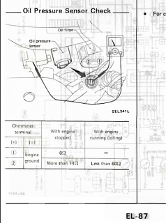

-
Coolant gauge on the cluster constantly reads middle. ECU signal is correct via NisTune, and fans are kicking in at proper temp. This was not an issue previously. Last work on the EFI loom was wiring in plugs for the injectors, nothing was modified with temp sensor, wiring, or connector. Any one have some common causes I should address first?
Also, oil pressure sensor is not sending signal. I have yet to meter the sensor. My first thought is that I have the incorrect sensor, I'm running needle gauges. The FSM only has one method for metering sensor resistance w/engine ON/OFF. This makes me question why there would be two part numbers for analog or digital gauges. The sensor was cleaned and bored out, no signal continues. Again, any common causes or easy check to perform before replacing the sensor?
Thanks!Last edited by 88sinZ; 06-30-2016, 06:49 PM. -
Alright so i gauged the Oil pressure sensor.
Sensor side w/+pos #1 side, -neg on batt neg term engine OFF. = OL
Sensor side w/+pos #2side, -neg on batt neg term. engine OFF = OL
This would point to a bad sensor per FSM
Not sure if worth mentioning, Harness results side
+ on #1, - on batt term. 72Ω
+ on #2, - on batt term. 25Ω
Just noticed FSM says ENGINE GROUND. will have to retest.Last edited by 88sinZ; 06-30-2016, 09:38 PM. -
IIRC there are two sources for coolant temperature. The ECU should rely on the CHTS, while the gauge on the dash should get its signal from the sensor in the area somewhere between two injectors (middle and front) on the passenger side. It's a one terminal plug there, I guess you could check that. -
Yes I've checked that sensor and connector. You are correct the ECU uses CHTS while gauge uses the small into on the LIM. Normal operating temp has been confirmed by CHTS via NisTune
After fiddling with the coolant sensor it is operating normally, i'm assuming due to all the coolant routing removed the engine heats up much faster.
Oil pressure sensor is shot though.Last edited by 88sinZ; 07-01-2016, 12:38 PM. -
Got the new oil pressure sensor installed today.
Still no signal to gauge on the dash.
Ω @ engine off meters good @ 70ishΩ
Ω @ engine idle meters bad @ 190Ω and dropping
Will be throwing a mechanical gauge on it tomorrow to see if the Z31 OEM location is even usable for a pressure reading using a VG33. The OIL warning light does not illuminate. I've pulled the valve covers previously and have determined good flow, if it had bad flow it would have blown up by now.
I'd just like the gauge to work - the head unit and climate controls were pulled during LC-1 install, so i'll have to take a quick look to make sure the connectors didn't pop loose too. -
Alright so, user error.
Sensor is good, metered ~50Ω at idle
harness continuity is good for signal and ground from connector to dash gauge plug.
Still no gauge movement.
Plugged in a 85T needle combo gauge (wiring is similar) still no gauge reading. Illumination is good.
No local places had the 1/8 NPT to 1/8 BSPT adapter to mech test the port.
connections are clean and no corrosion.
Any help pls!? -
The oil pressure sensor seems to be such a common issue among the early VG's i don't even mind talking into the abyss.
Did some tinkering today.
Providing full ground to T.S. #2 plug = maximum gauge pressure reading
Later sensors only provide ON/OFF signal for oil pressure lights. I.E. VG33 single wire sensors.
Cycled gauge by jumping terminal to batt. ground a few times, reattached connector. Minor readings, still under 30PSI.
1/8 BSPT to 1/8 NPT adaptor arriving monday to do a mechanical test.
Return service requested for ROCKAUTO BECK/ARNLEY 2011469 sensor.
Reversed wiring for a last ditch - dash OIL PRESS light illuminates during IGN HOT, dimly as opposed to NO LIGHT previously. -
For mech testing the oil pressure on the cheap.
pressure gauge from Lowes 0-100 PSI - it uses a male 1/4 NPT
1/4 NPT female to 1/8 NPT female adapter.
common grease gun line uses 1/8NPT using male ends, 18", available at most auto parts stores
1/8NPT female to 1/8 BSPT male - glowshift P/N GS-FA_BSP
Test registers 5-9PSI at idle 30-40PSI @2kRPM with 10W-30 @ operating temp, oil temp 140F. VG33E FSM's state 9PSI at idle, 45-60PSI at 2KRPM at operating temp.
Will attempt a post filter pressure reading, then going to Rotella T1 before pulling the pan for inspection and/or shimming the relief valve. Going to sleep on it. While these pressure values falls into spec, i'd rather not run the border line of acceptable pressure.
This is using the VG33 oil pump, purolator 14610 filter, turbo oil feed from driver side galley with a 12x1.5 to -4AN 18" turbo feed line to a HX35, Pressure reading taken from passenger side oil galley at the OEM Z31 pressure sensor location. -
Not saying this is the right way to do it, but I switched to VR1 20W-50 to bump my pressure up a little. Since I never plan to run this thing in the cold (summer tires), it works for me, and I don't get lifter rattle at startup. FWIW. Good luck.
MikeButter (credit where credit is due): "You have this "gift" where you can make cooking a Hot Pocket seem like you need a certain wavelength microwave and involve brown mustard." -
i tested the frontier (VG33ER w/10w-30) today and got 60PSI COLD and 30PSI HOT.
Going to bypass changing the oil, and pull the pan today. Hopefully have it buttoned up tonight. alignment is scheduled for tomorrow morning. i'm assuming the pickup tube may be sludged up from assembly lube or the mount bolts are lose allowing air intake. -
It's all back together. Nothing out of the ordinary.
Pressures is linear from 10 to 50psi. Fuck it, if it blows these motors are a dime a dozen. It's ran like this for quite some time, no noises or problems. Maybe the pathfinder pumps are shit or my bearings are toast. -
Local dude came by to roll rear fenders to keep the Michilens nice and fresh the other day.
Car pulled great even though i stayed out of boost. Stock late turbo map. Oil pressure readings under operation were steady in the 30PSI range.
Alignment went well, about 3Deg camber out back, left rear maxed at 0.5 Deg toe-in everything else is spot on. ST springs and bars, Poly bushings, and tokico blues.
Ride back went well until i parked it to lift the garage door and noticed a splash of oil below the rear pan. Exhaust is still bumping around the rear subframe, so will likely just fab up a turn down dump.
Decided to pull the engine and seal it properly, will inspect bearings and possibly swap the pump for a later generation. Have it ready to pop in the morning and sweat balls off digging into the guts this weekend.Last edited by 88sinZ; 07-22-2016, 02:18 AM. -
any updates? trying to decide if i should use the 33 pump.Last edited by sporklift; 08-13-2016, 04:18 AM.88 N/A 300zx (Slow....) -
Yeah, i just put it in another thread, it turned out to be a worn pump.https://z31performance.com/forum/z31…d-rod-bearings
Originally posted by 88sinz
I also added the Z31 oil filter on the side of the block, but the engine didn't have the check ball so filtering performance will be minimal. The pump mounted filter will be changed with every oil service, the block filter will be changed every 3rd or 4th. I split the filter for inspection on each change so it should be a good comparison using the pump filter as a short term 'read' and the block filter as a long term 'read' of engine performance/wear. Oil capacity is now around 4.75QT
Tuning is scheduled for this Wednesday, very excited.Last edited by 88sinZ; 08-13-2016, 11:45 AM. -
ahhh right on thanks for the info. thats a good setup with the filters for a long and short read. though i honestly hate the 33 pump because of that filter location and size.
also i thought you could order the check ball from nissan? i could be very wrong on that though.
anyways good luck with the tune. id be pumped.88 N/A 300zx (Slow....)

Copyright © 2006–. All rights reserved. Privacy Policy